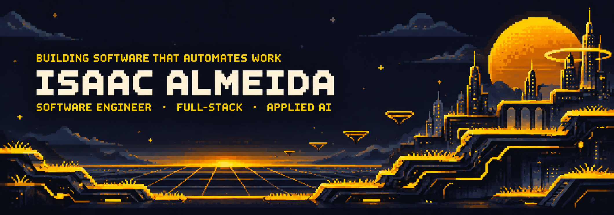

01 / FINANCE↗
Bank Reconciliation Engine
Automates statement matching across OFX/CSV imports and financial entries, making reconciled, pending and divergent transactions easy to review.
VIEW SOURCE
SOFTWARE ENGINEER / 3D LAB
Building internal ERP systems, integrations and automation.
Explore selected workFull-stack engineering, backend systems and integrations shaped by more than four years in financial operations. I care about the business rules behind the code and the people who rely on it.
LET’S TALKA selection of software, automation and research projects.
Automates statement matching across OFX/CSV imports and financial entries, making reconciled, pending and divergent transactions easy to review.
VIEW SOURCEA local .NET assembly explorer for reconstructed C#, IL, metadata and references, without executing the analyzed assembly.
VIEW SOURCEA financial research platform exploring market-data pipelines, machine learning, backtesting and local LLM/RAG workflows.
I started in financial operations, managing cash flow, bank reconciliation and accounts payable/receivable. I moved into software by automating the repetitive work I knew firsthand.
Today I build ERP features and backend integrations. I enjoy making complex workflows easier to understand, operate and improve.
Building full-stack features for internal ERP modules, working across JavaScript, PHP, Laravel, Python, APIs and applied AI.
Developed Java and Spring Boot services, REST APIs and workflow automation for financial operations.
Managed cash flow, bank reconciliation, accounts payable/receivable and recurring finance processes.
Java · Spring Boot · PHP · Laravel · Python · REST APIs
JavaScript · React · HTML · CSS
MySQL · PostgreSQL · Git · Linux
Cybersecurity · SIEM/IDS · RAG · AI agents
Systems Analysis and Development · Newton Paiva / Wyden · 2025–Present
Google Cybersecurity · IBM Cybersecurity · Santander RAG & Python · Data with Python and AI
Portuguese · Native / English · B2 (writing B1)